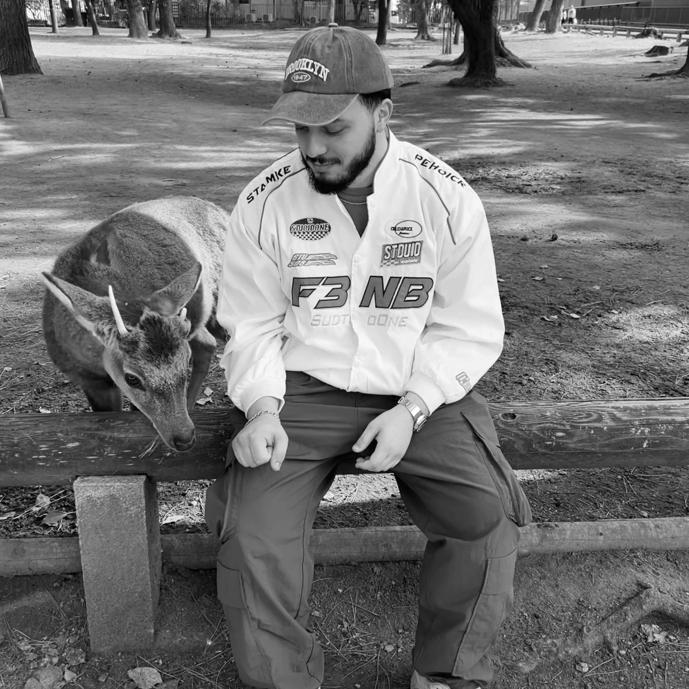

Full-Stack Developer

Ik ben Yassin Moumni, 25 jaar en studeer Graduaat Programmeren aan Thomas More. Als toekomstige full-stack developer heb ik een sterke voorkeur voor front-end development. Ik hou van het bouwen van moderne, gebruiksvriendelijke websites die er goed uitzien en soepel werken. Ik hou van minimalistisch design en het creëren van websites waar gebruikers graag mee interacteren. Ik ben op zoek naar een stage of eerste job bij een tech startup of digital agency waar ik mijn vaardigheden verder kan ontwikkelen.